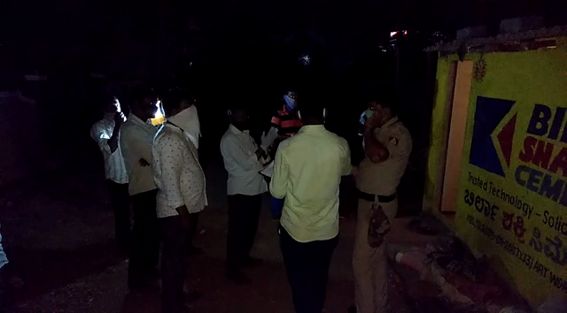

ಬೀದರ್/ಮಂಗಳೂರು: ಕೊರೊನಾ ಮಹಾಮಾರಿ ಹಿನ್ನೆಲೆಯಲ್ಲಿ ಭಾರತ ಸಂಪೂರ್ಣ ಲಾಕ್ಡೌನ್ ಆಗಿದ್ದು, ಹೀಗಾಗಿ ಅಬಕಾರಿ ಇಲಾಖೆ ಕೂಡ ಸಾರಾಯಿ ಬಂದ್ ಮಾಡಿರುವುದರಿಂದ ಕುಡುಕರು ಪರದಾಡುತ್ತಿದ್ದಾರೆ. ಅಲ್ಲದೇ ಕುಡಿಯಲು ಮದ್ಯ ಸಿಗದೇ ನಾಲ್ವರು ಆತ್ಮಹತ್ಯೆ ಮಾಡಿಕೊಂಡಿದ್ದಾರೆ.
ಜಿಲ್ಲೆಯಲ್ಲಿ ಕಳೆದ ಒಂದು ವಾರದಿಂದ ಕುಡಿಯಲು ಮದ್ಯ ಸಿಕ್ಕಿಲ್ಲ ಎಂಬ ಕಾರಣಕ್ಕೆ ಬಾವಿಗೆ ಹಾರಿ ಹೋಟೆಲ್ ಕಾರ್ಮಿಕ ಒಬ್ಬ ಆತ್ಮಹತ್ಯೆ ಮಾಡಿಕೊಂಡಿದ್ದಾನೆ ಎನ್ನಲಾಗಿದೆ. ಭಾಲ್ಕಿ ಪಟ್ಟಣದ ಕೋಟೆಯ ಝರ ಬಾವಿಗೆ ಹಾರಿ 40 ವರ್ಷದ ಭಾಸ್ಕರ್ ನಸುಕಿನ ಜಾವ ಆತ್ಮಹತ್ಯೆಗೆ ಶರಣಾಗಿದ್ದಾನೆ. ಮೂಲತ ಉಡುಪಿ ಜಿಲ್ಲೆಯ ಕುಂದಾಪೂರ ವ್ಯಕ್ತಿಯಾಗಿದ್ದು, ಸುಮಾರು ವರ್ಷಗಳಿಂದ ಬೀದರ್ನ ಭಾಲ್ಕಿಯಲ್ಲಿ ವಾಸವಾಗಿದ್ದನು.
ಭಾಲ್ಕಿ ಪಟ್ಟಣದ ಉಡುಪಿ ಹೋಟೆಲ್ನಲ್ಲಿ ಅಡುಗೆ ಭಟ್ಟನಾಗಿ ಕೆಲಸ ಮಾಡುತ್ತಿದ್ದನು. ಸುದ್ದಿ ತಿಳಿದು ಭಾಲ್ಕಿ ನಗರ ಪೊಲೀಸರು ಸ್ಥಳಕ್ಕೆ ಭೇಟಿ ಪರಿಶೀಲನೆ ಮಾಡಿದ್ದಾರೆ.
ಇತ್ತ ದಕ್ಷಿಣ ಕನ್ನಡದಲ್ಲಿ ಮದ್ಯ ಸಿಗಲಿಲ್ಲ ಅಂತ ಎಣ್ಣೆ ಪ್ರಿಯರಿಬ್ಬರು ಆತ್ಮಹತ್ಯೆಗೆ ಶರಣಾಗಿದ್ದಾರೆ. ಕಡಬ ತಾಲೂಕಿನಲ್ಲಿ ಮದ್ಯ ದೊರೆಯದೇ ಬೇಸರದಿಂದ ಇಬ್ಬರು ಯುವಕರು ಆತ್ಮಹತ್ಯೆ ಮಾಡಿಕೊಂಡಿದ್ದಾರೆ. ಈ ಕುರಿತು ಕಡಬ ಪೊಲೀಸ್ ಠಾಣೆಯಲ್ಲಿ ಎರಡೂ ಪ್ರತ್ಯೇಕ ಪ್ರಕರಣಗಳು ದಾಖಲಾಗಿವೆ.
ಇನ್ನೂ ಹುಬ್ಬಳ್ಳಿ ಜಿಲ್ಲೆಯ ಹೊಸೂರಿನ ಗಣೇಶ ಪಾರ್ಕಿನಲ್ಲಿ ಧಾರವಾಡ ಮೂಲದ ಉಮೇಶ್ ಹಡಪದ (46) ಆತ್ಮಹತ್ಯೆ ಮಾಡಿಕೊಂಡಿದ್ದಾನೆ. ನಾಗರಾಜ ರಟಗಲ್ ಅವರ ನಿರ್ಮಾಣ ಹಂತದ ಮನೆಯ ವಾಚ್ ಮೆನ್ ಆಗಿ ಉಮೇಶ್ ಕೆಲಸ ಮಾಡುತ್ತಿದ್ದ. ಕಳೆದ ಐದು ದಿನದಿಂದ ಕುಡಿಯಲು ಮದ್ಯ ಸಿಕ್ಕಿಲ್ಲ ಎಂಬ ಕಾರಣಕ್ಕೆ ನೇಣಿಗೆ ಶರಣಾಗಿದ್ದಾನೆ.

ಕಳೆದ 15 ದಿನದ ಹಿಂದೆ ಉಮೇಶ್ ಕೆಲಸಕ್ಕೆ ಸೇರಿಕೊಂಡಿದ್ದನು ಎಂದು ತಿಳಿದು ಬಂದಿದೆ. ಮೂರು ವರ್ಷದಿಂದ ಕುಟುಂಬ ವರ್ಗದವರಿಂದ ಉಮೇಶ್ ದೂರ ಉಳಿದಿದ್ದ. ಈ ಸಂಬಂಧ ವಿದ್ಯಾನಗರ ಪೊಲೀಸ್ ಠಾಣೆಯಲ್ಲಿ ಪ್ರಕರಣ ದಾಖಲಾಗಿದೆ.